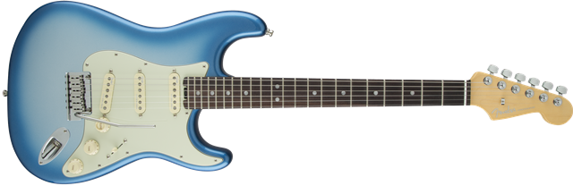

American Elite Stratocaster®
Overview
Externally the American Elite Stratocaster has Fender’s timeless style, but under the hood it’s an entirely new breed of guitar designed for 21st-century players who constantly push the envelope. With over a dozen new innovations, each guitar is a true performer with eye-catching style, exceptional feel and versatile sound from the very first moment you plug it in and play.
Featured on all American Elite instruments, the new fourth generation Noiseless pickups are only available in this series, and represent a quantum leap in pickup design. Combining vintage-style sound with effectively noise-free performance, these are the pinnacle of Fender’s noiseless pickup designs, offering pristine cleans and fat, overdriven tones that scream with pure rock ‘n’ roll power. Designed for fast playing and effortless position changes, the compound profile neck is ideal for all playing styles. A modern “C”-shape at the nut, the profile morphs along the length of the neck to a modern “D”-shaped profile at the updated neck heel, providing plenty of comfortable support for fret hand antics. New locking short-post tuning machines provide increased break angle at the synthetic bone nut for buzz-free performance while the smooth two-point modern tremolo adds emotive touches to your performance without sacrificing your tuning.
Fender is renowned for head-turning style, and this guitar is no different—from the redesigned sleek back and forearm contours that hug the player’s body for an enhanced playing experience to the black chrome headstock logo and large pearloid fret markers this instrument will dazzle the audience with elegant style. The American Elite Stratocaster is a bold new guitar for the brave new guitarist who is setting out to cross uncharted musical terrain. Includes a redesigned Elite Molded Case with TSA locks to provide increased protection for your cherished instrument.
Specifications
- Model Name: American Elite Stratocaster®, Rosewood Fingerboard, Sky Burst Metallic
- Series: American Elite
- Color: Sky Burst Metallic
- Scale Length: 25.5"
- Number of Strings: 6
Detailed Description
Body
Body Shape: Stratocaster®
Body Material: Alder
Body Finish: Gloss Polyurethane
Neck
Neck Material: Maple
Neck Shape: Compound Back Shape, Modern "C" to "D"
Scale Length: 25.5" (648 mm)
Fingerboard Radius: 9.5"-14" Compound Radius (241 mm-355.6 mm)
Number of Frets: 22
Fret Size: Medium Jumbo
String Nut: Synthetic Bone
Nut Wth: 1.685" (42.8 mm)
Neck Finish: Satin Urethane Finish on Back of Neck with Gloss Urethane Headstock Face
Fingerboard: Rosewood
Position Inlays: Large Black Pearloid Dots
Electronics
Pickups: New 4th Generation Noiseless
Controls: Master Volume (with S-1™ switch), Tone 1. (Neck Pickup), Tone 2. (Brge/Mdle Pickup; No-Load™ Tone control)
Pickup Switching: 5-Position Blade: Position 1. Brge Pickup, Position 2. Brge and Mdle Pickup, Position 3. Mdle Pickup,
Position 4. Mdle and Neck Pickup, Position 5. Neck Pickup
| Pickup Selector Switch Position |
Neck Pickup | Middle Pickup | Bridge Pickup | Tone Control in Effect |
|---|---|---|---|---|
| Position 1 | - | - | ON | No Tone Control |
| Position 2 | - | ON | ON | T2 |
| Position 3 | - | ON | - | T2 |
| Position 4 | ON | ON | - | T1&T2 |
| Position 5 | ON | - | - | T1 |
Pickup Configuration: SSS
Hardware
Brge: 2-Point Deluxe Synchronized Tremolo with Pop-In Arm
Tuning Machines: Deluxe Staggered Cast/Sealed Locking
Orientation: Right-Hand
Pickguard: 3-Ply Mint Green
Control Knobs: Aged White Soft Touch Knobs
Miscellaneous
Strings: Fender® USA, NPS, (.009-.042 Gauges)